Question types
Roadmap
Overview
Categorical /
Numeric
Text /
Date /
Sensors / / /
Geography
Overview
Attributes

Question type
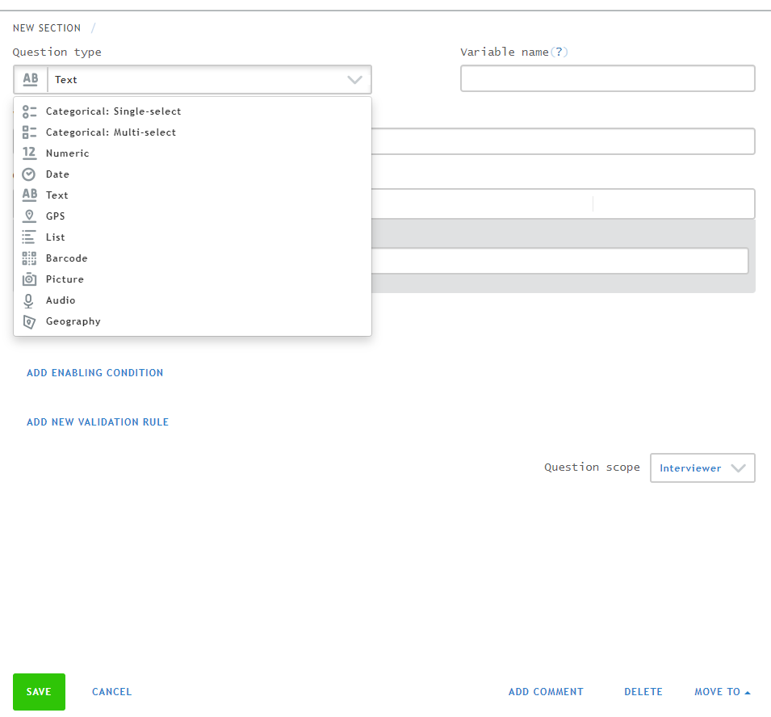Question Type
Variable name
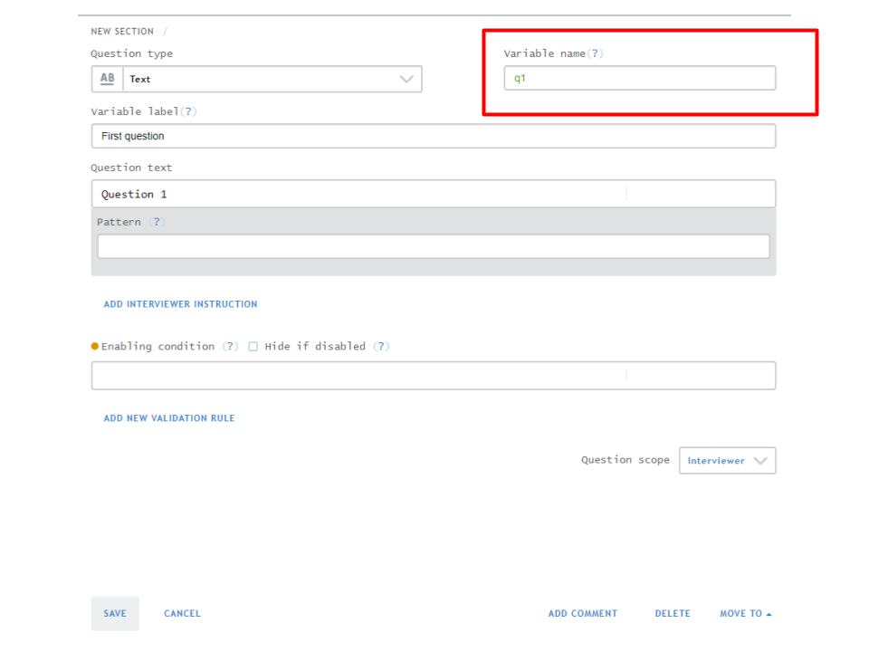Variable name
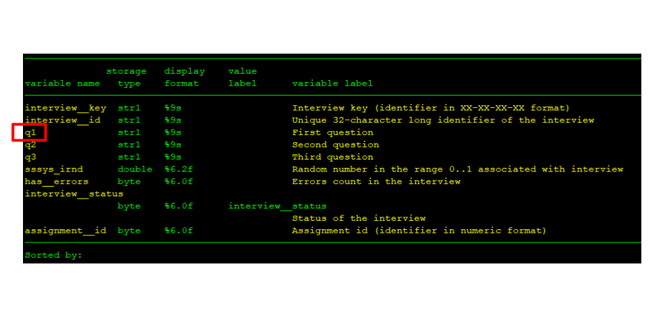Variable label

Variable label

Question text
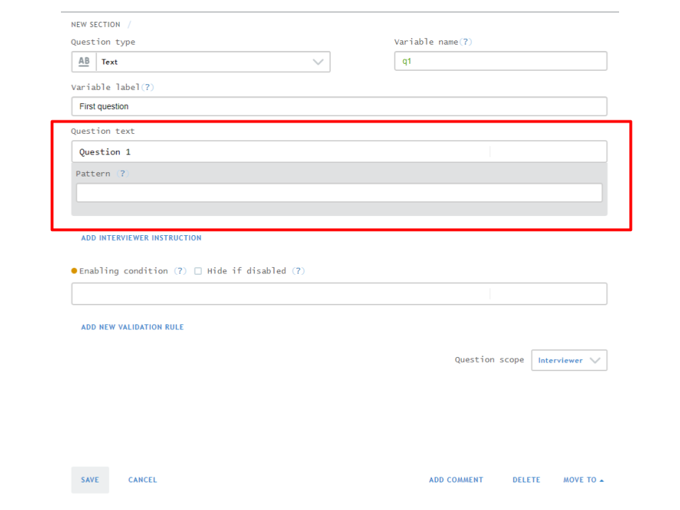Question text
Interviewer instruction

Interviewer instruction

Type-specific attributes
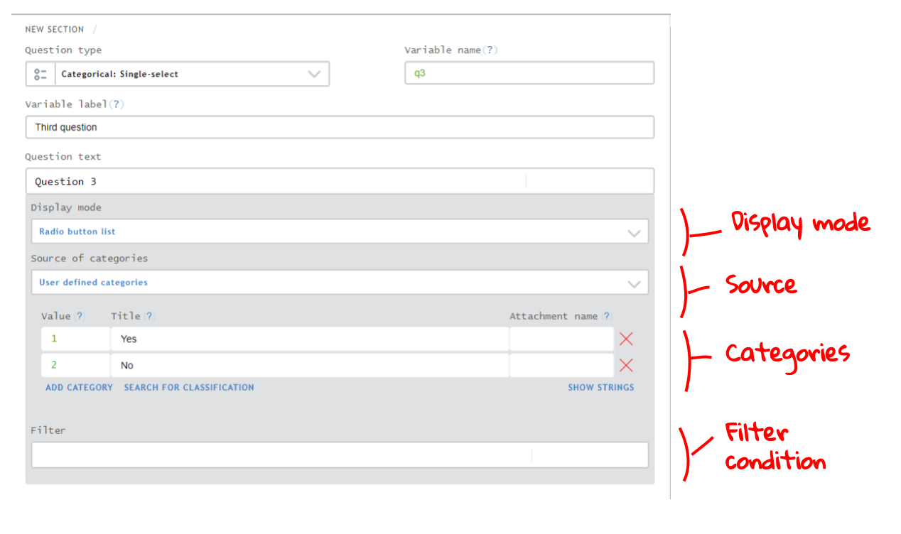Categorical /
Categorical
Single-select
Multi-select
Single-select
Single-select
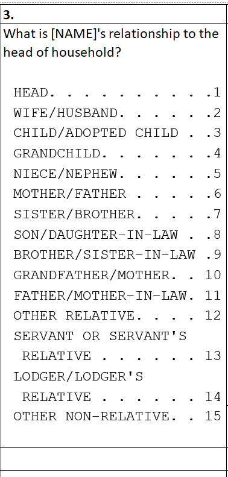
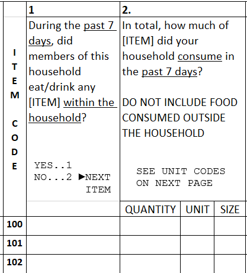
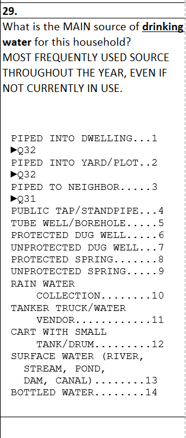
CAPI options
Display mode
Sources of categories
Filter
Display mode
Follow along in the Question types public questionnaire here
- Radio button
- Combo box
- Cascading combo box
Display mode
- Radio button
- Combo box
- Cascading combo box
Sources of categories
User defined categories
Reusable categories
List question or question from roster group
User defined categories
Category view
Text view
Category view
- Can copy-paste answer options from the questionnaire
- But must do so one by one
Text view
- Can copy-paste answer options from the questionnaire
- But must follow expected format (or be transformed into that format):
First option....1
Second option....1Reusable categories
When
Same set of answer options are used for several questions
How
- Click on
Categoriesin the left-hand pane - Add a new set of categories
- Add categories
- Select that reusable categories for relevant questions
List question or question from roster group
Why
Draw answers from another a list made elswhere in the interview:
- List question
- Roster (e.g., ID of the respondent)
How
- Select
List question or question from roster groupas the source of categories
Filter
Why
Conditionally hide/show answer options
How
- Write a logical condition. When true, option shown. Otherwise, option hidden.
- See the
Introduction to Conditionspresentation for more details - See also the documentation on the filter conditions.
Multi-select
Multi-select
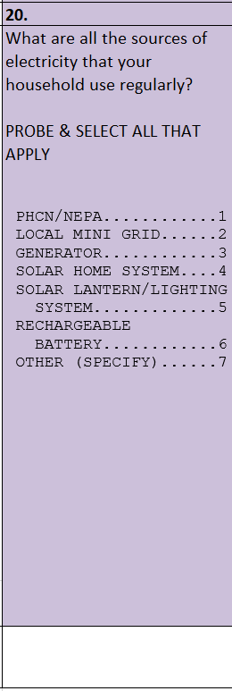
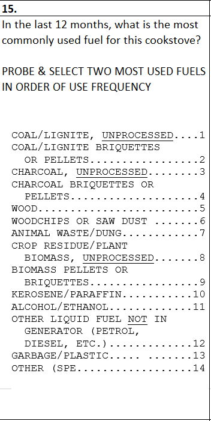
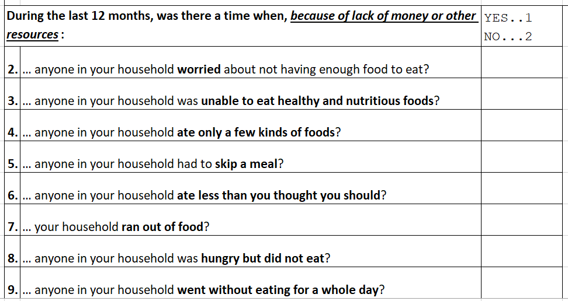
::::
Options
Display mode
Source of categories
Filter
Record answer order
Max number of answers
Options
Display mode
Source of categories
Filter
Record answer order
Max number of answers
Options
Display mode
Record answer order
Max number of answers
Display mode
- Checkboxes
- Yes/No buttons
- Combo box
Display mode
- Checkboxes
- Yes/No buttons
- Combo box
Record answer order
Why
Record answers and their order of importance
How
Tick the Record answer order box
Max number of answers
Why
Limit the number of answers provided (e.g., two most important sources of electricity)
How
- Provide a number in the
Max number of answersbox. - If no answer is provided, there is no maximum.
Numeric
Numeric
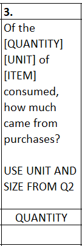
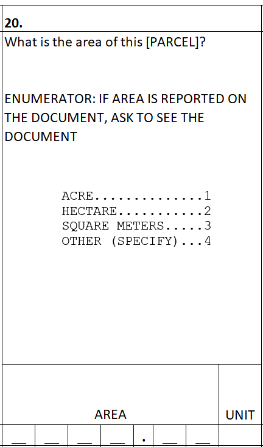
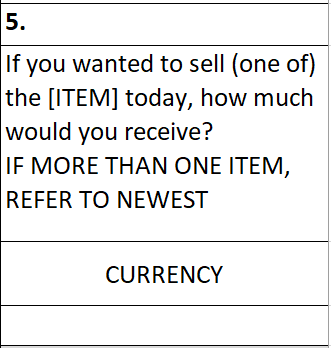
Options
Options
Integer
Number of decimals
Number of decimals
Use 1000 separator
Add special value
Integer
- Enabled. Default. Restricts input to integer values.
- Disabled. Allows numbers with and without decimals. No limit on the number of decimal places.
Number of decimals
- When empty. No limit on number of decimal places.
- When filled. Maximum number of decimal places allowed.
Use 1000 separator
- Affects display on tablet.
- Does not affect how data are stored.
Text /
Text
Text
List
Text
Text
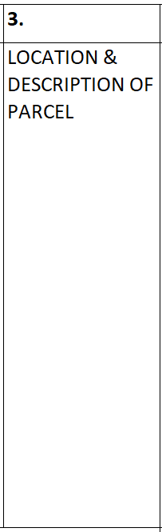
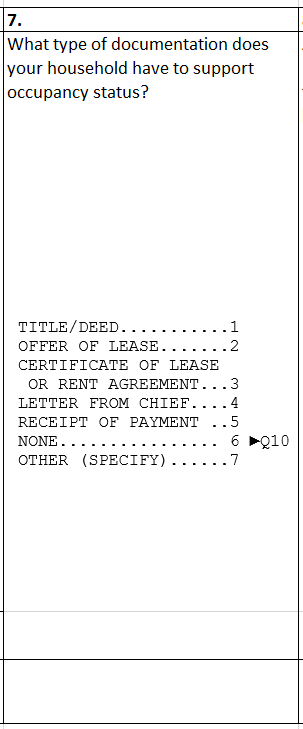
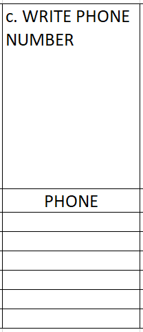
Options
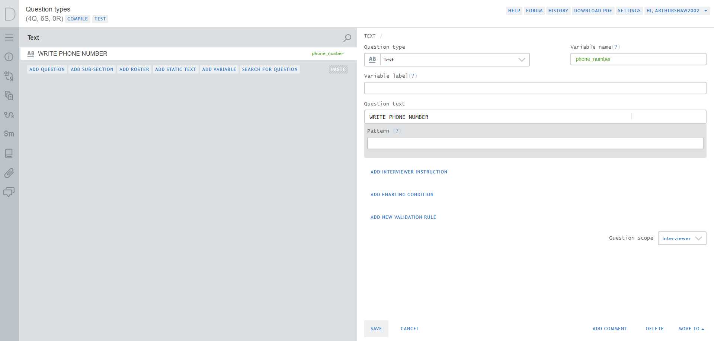
Pattern
Text
Pattern
Why
Restrict what can be recorded
How
| Character | Represents |
|---|---|
~ |
One alpha character (i.e., A-Z, a-z) |
# |
One numeric character (i.e., 0-9) |
* |
One alphanumeric character (i.e., A-z, a-z, 0-9) |
Examples
| Pattern | Represents |
|---|---|
##/##/## |
Date |
0# ## ## ## ## |
French phone number |
~~ #### |
Flight number |
List
List
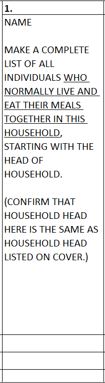
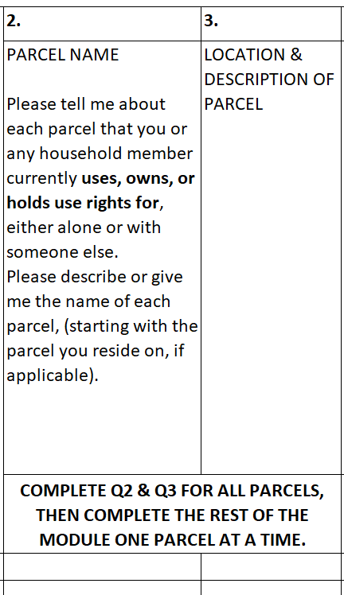
List
Options
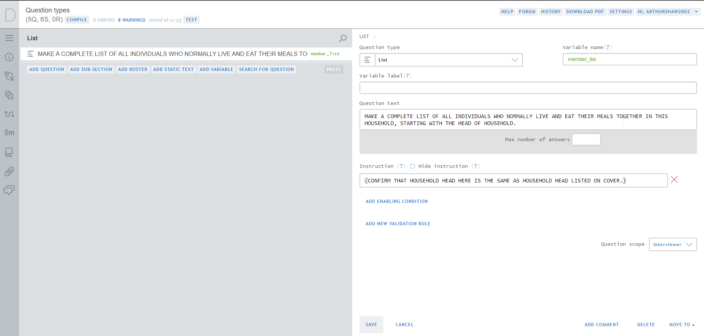
Max number of answers
Max number of answers
Why
Limit the number of
- Answers per question instructions
- Roster rows per Survey SOlutions requirements. See
Creating basic rostersfor more.
How
- Provide a number
- Otherwise, there is no limit
Date /
Date
Calendar date
Timestamp
Calendar
Calendar
Calendar
Calendar
- Pick a calendar date
- Default date. If not set, no default. If set, default value for calendar picker.
Timestamp
Timestamp
Timestamp
Timestamp
When pressed, captures the device’s system time
Sensors / / /
Sensors / / /
GPS
Picture
Barcode
Audio
GPS
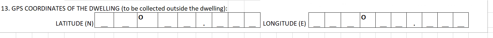GPS
GPS
TODO: video of creating question and showing it (probably on tablet, since GPS on web tester not supported)
NOTE: record this at the office so that GPS of office rather than of home is disclosed
- Capture GPS coordinates upon button press
- Export as several variables:
- Longitude
- Latitude
- Accuracy
- Altitude
- Timestamp
- See more here
Picture
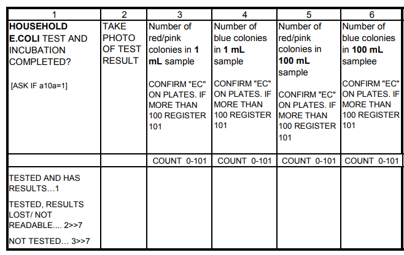Source: 2015-16 Ethiopia Socioeconomic Survey, Water Quality Testing Module
Picture
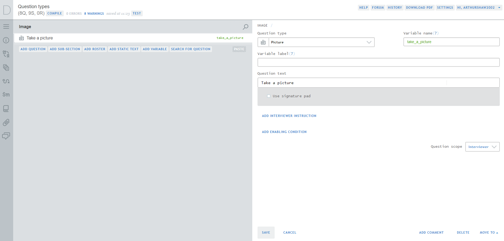
Picture
Signature
Picture
On CAPI
- Can retake as needed
- Exports as
- image name in the microdata
- folder of images grouped by
interview__idin the binary data
On CAWI
Upload an image file
Notes
See more here
Signature
On CAPI
- Enable as
Use signature pad - Draw signature
- Export as image
On CAWI
- Upload an image file
Notes
See more here
Barcode
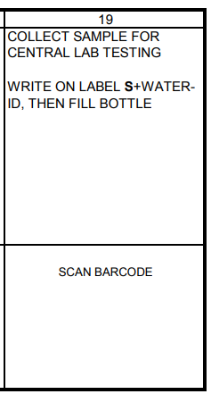Source: 2015-16 Ethiopia Socioeconomic Survey, Water Quality Testing Module
Barcode
- Scan barcode/QR code
- Export as string of information contained in the barcode
- See more here
Audio
- Capture audio using tablet’s microphone
- Exports as:
- Name of file in microdata
- Audio file (
.mp4) in binary data
- See more here